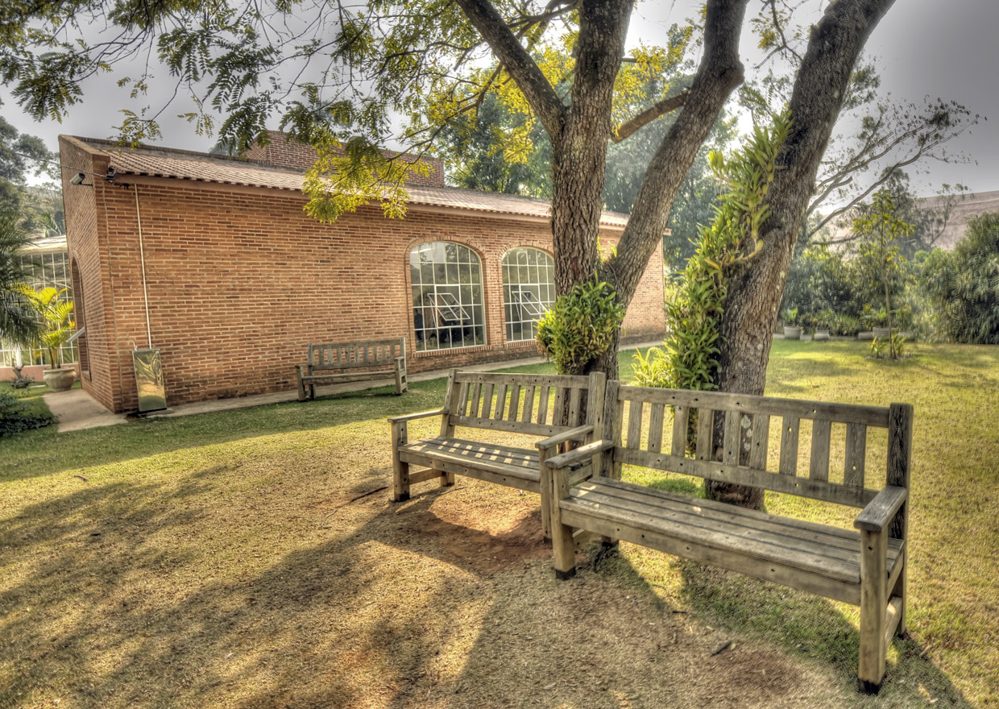

UNIDADE DE DESENVOLVIMENTO AMBIENTAL (UNIDAM).
A Unidade de Desenvolvimento Ambiental (Unidam) é o local onde é desenvolvido o cultivo de plantas ornamentais e arbóreas, cujos mais de 170 tipos de mudas são usados em praças, jardins, calçadas e próprios públicos para o paisagismo e o reflorestamentoda cidade.
Além disso, a Unidam possui uma horta e conta com uma academia ao ar livre e uma pista de caminhada, sendo aberta à população diariamente, das 7h30 às 17h.
O local conta ainda com uma usina de compostagem, que transforma galhos de poda em substrato para as plantas.
Na Unidam é também desenvolvido o programa Delícia de Reciclagem pelo qual a população troca material reciclável por verduras ali plantadas. O programa visita bairros do município como São Camilo e Vila Ana ao longo da semana.

- Endereço: Rua Ernesto Gonçalves Rosa Junior, 150 – Jardim Florestal
- Telefone: (11) 4521-1713
- Facebook: Unidade De Desenvolvimento Ambiental Jundiaí
- Horário de Funcionamento: Temporariamente fechado por conta da pandemia da Covid-19
UNIDADE DE DESENVOLVIMENTO AMBIENTAL (UNIDAM).
A Unidade de Desenvolvimento Ambiental (Unidam), está localizado no Endereço: Rua Ernesto Gonçalves Rosa Junior, 150 – Jardim Florestal.